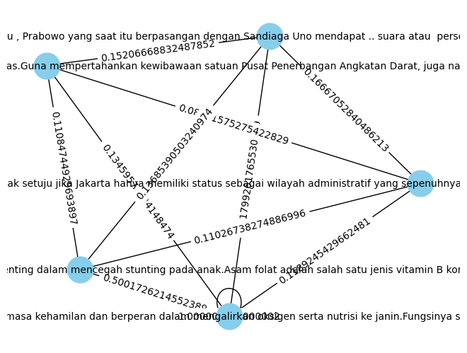

Nama : Ovadilla Aisyah Rahma
NIM : 200411100033
Kelas : PPW A
Crawling Berita#
crawling data dari berita online
ekstraksi kalimat dari berita online
bentuk TF-IDF dari kalimat
bentuk cosinus similaritas dari langkah ke 3
bentuk dari langkah 4 suatu graph (library)
hitung closeness centrality dari langkah 5 (library)
!pip install requests
!pip install beautifulsoup4
Requirement already satisfied: requests in /usr/local/lib/python3.10/dist-packages (2.31.0)
Requirement already satisfied: charset-normalizer<4,>=2 in /usr/local/lib/python3.10/dist-packages (from requests) (3.3.2)
Requirement already satisfied: idna<4,>=2.5 in /usr/local/lib/python3.10/dist-packages (from requests) (3.6)
Requirement already satisfied: urllib3<3,>=1.21.1 in /usr/local/lib/python3.10/dist-packages (from requests) (2.0.7)
Requirement already satisfied: certifi>=2017.4.17 in /usr/local/lib/python3.10/dist-packages (from requests) (2023.11.17)
Requirement already satisfied: beautifulsoup4 in /usr/local/lib/python3.10/dist-packages (4.11.2)
Requirement already satisfied: soupsieve>1.2 in /usr/local/lib/python3.10/dist-packages (from beautifulsoup4) (2.5)
import pandas as pd
import requests
import csv
from bs4 import BeautifulSoup
Crawling Data Berita Politik#
header={
'user-agent':'Mozilla/5.0 (Windows NT 10.0; Win64; x64) AppleWebKit/537.36 (KHTML, like Gecko) Chrome/110.0.0.0 Safari/537.36'
}
linkberita = 'https://sorotpolitik.kompas.com/'
listpolitik = []
n = 37
for halaman in range(1, n+1):
req = requests.get(linkberita)
soup = BeautifulSoup(req.text, 'html.parser')
items = soup.findAll('div', 'article__list clearfix') #class semua berita
for it in items:
link = it.find('a','article__link')['href'] #class perberita
req2 = requests.get(link)
soup2 = BeautifulSoup(req2.text, 'html.parser')
judul = soup2.find('h1', 'read__title').text #class judul berita
isi = "".join(soup2.find('div', 'read__content').text.split('\n'))
#print(judul)
#print(isi)
listpolitik.append([judul,isi])
---------------------------------------------------------------------------
KeyboardInterrupt Traceback (most recent call last)
<ipython-input-3-70ce30a30af1> in <cell line: 9>()
14 link = it.find('a','article__link')['href'] #class perberita
15
---> 16 req2 = requests.get(link)
17 soup2 = BeautifulSoup(req2.text, 'html.parser')
18 judul = soup2.find('h1', 'read__title').text #class judul berita
/usr/local/lib/python3.10/dist-packages/requests/api.py in get(url, params, **kwargs)
71 """
72
---> 73 return request("get", url, params=params, **kwargs)
74
75
/usr/local/lib/python3.10/dist-packages/requests/api.py in request(method, url, **kwargs)
57 # cases, and look like a memory leak in others.
58 with sessions.Session() as session:
---> 59 return session.request(method=method, url=url, **kwargs)
60
61
/usr/local/lib/python3.10/dist-packages/requests/sessions.py in request(self, method, url, params, data, headers, cookies, files, auth, timeout, allow_redirects, proxies, hooks, stream, verify, cert, json)
587 }
588 send_kwargs.update(settings)
--> 589 resp = self.send(prep, **send_kwargs)
590
591 return resp
/usr/local/lib/python3.10/dist-packages/requests/sessions.py in send(self, request, **kwargs)
701
702 # Send the request
--> 703 r = adapter.send(request, **kwargs)
704
705 # Total elapsed time of the request (approximately)
/usr/local/lib/python3.10/dist-packages/requests/adapters.py in send(self, request, stream, timeout, verify, cert, proxies)
484
485 try:
--> 486 resp = conn.urlopen(
487 method=request.method,
488 url=url,
/usr/local/lib/python3.10/dist-packages/urllib3/connectionpool.py in urlopen(self, method, url, body, headers, retries, redirect, assert_same_host, timeout, pool_timeout, release_conn, chunked, body_pos, preload_content, decode_content, **response_kw)
789
790 # Make the request on the HTTPConnection object
--> 791 response = self._make_request(
792 conn,
793 method,
/usr/local/lib/python3.10/dist-packages/urllib3/connectionpool.py in _make_request(self, conn, method, url, body, headers, retries, timeout, chunked, response_conn, preload_content, decode_content, enforce_content_length)
466 # Trigger any extra validation we need to do.
467 try:
--> 468 self._validate_conn(conn)
469 except (SocketTimeout, BaseSSLError) as e:
470 self._raise_timeout(err=e, url=url, timeout_value=conn.timeout)
/usr/local/lib/python3.10/dist-packages/urllib3/connectionpool.py in _validate_conn(self, conn)
1095 # Force connect early to allow us to validate the connection.
1096 if conn.is_closed:
-> 1097 conn.connect()
1098
1099 if not conn.is_verified:
/usr/local/lib/python3.10/dist-packages/urllib3/connection.py in connect(self)
640 )
641
--> 642 sock_and_verified = _ssl_wrap_socket_and_match_hostname(
643 sock=sock,
644 cert_reqs=self.cert_reqs,
/usr/local/lib/python3.10/dist-packages/urllib3/connection.py in _ssl_wrap_socket_and_match_hostname(sock, cert_reqs, ssl_version, ssl_minimum_version, ssl_maximum_version, cert_file, key_file, key_password, ca_certs, ca_cert_dir, ca_cert_data, assert_hostname, assert_fingerprint, server_hostname, ssl_context, tls_in_tls)
781 server_hostname = normalized
782
--> 783 ssl_sock = ssl_wrap_socket(
784 sock=sock,
785 keyfile=key_file,
/usr/local/lib/python3.10/dist-packages/urllib3/util/ssl_.py in ssl_wrap_socket(sock, keyfile, certfile, cert_reqs, ca_certs, server_hostname, ssl_version, ciphers, ssl_context, ca_cert_dir, key_password, ca_cert_data, tls_in_tls)
444 if ca_certs or ca_cert_dir or ca_cert_data:
445 try:
--> 446 context.load_verify_locations(ca_certs, ca_cert_dir, ca_cert_data)
447 except OSError as e:
448 raise SSLError(e) from e
KeyboardInterrupt:
Crawling Data Berita Nasional#
header={
'user-agent':'Mozilla/5.0 (Windows NT 10.0; Win64; x64) AppleWebKit/537.36 (KHTML, like Gecko) Chrome/110.0.0.0 Safari/537.36'
}
linkberita = 'https://nasional.kompas.com/search/'
listt = []
n = 13
for halaman in range(1, n+1):
req = requests.get(linkberita)
soup = BeautifulSoup(req.text, 'html.parser')
items = soup.findAll('div', 'article__list clearfix') #class semua berita
for it in items:
link = it.find('a','article__link')['href'] #class perberita
req2 = requests.get(link)
soup2 = BeautifulSoup(req2.text, 'html.parser')
judul = soup2.find('h1', 'read__title').text #class judul berita
isi = "".join(soup2.find('div', 'read__content').text.split('\n'))
#print(judul)
#print(isi)
listt.append([judul,isi])
Menggabungkan 2 kategori crawling berita yaitu nasional dan politik
nasional = pd.DataFrame(listt, columns=['Judul', 'Isi'])
nasional['Label'] = 'Nasional'
politik = pd.DataFrame(listpolitik, columns=['Judul', 'Isi'])
politik['Label'] = 'Politik'
gabung = [nasional, politik]
combined_df = pd.concat(gabung, ignore_index=True)
print(combined_df)
#combined_df.to_csv('beritanasionalpolitik.csv', index=False)
Judul \
0 Warga Depok Keluhkan KIS Tiba-tiba Non-aktif, ...
1 IDI Konfirmasi Kenaikan Kasus Covid-19 di Indo...
2 Didukung Pergerakan Perempuan Muda Nahdliyin, ...
3 KSAD Maruli Minta Puspenerbad Susun Teori Baru...
4 Setiap Sesi Debat, Capres dan Cawapres Saling ...
.. ...
586 Jubir PKB: Kami Setuju Pembahasan RUU DKJ, asa...
587 Soal Rencana Pengalihan Anggaran Bansos, TKN P...
588 Soal Perubahan Format Debat, TKN Sebut Siap De...
589 Cegah Politisasi Bansos Jelang Pemilu 2024, Sa...
590 Target Menangkan Anies-Muhaimin pada Pemilu 20...
Isi Label
0 DEPOK, KOMPAS.com - Kepala Dinas Sosial Kota ... Nasional
1 JAKARTA, KOMPAS.com - Ketua Satuan Tugas (Satg... Nasional
2 JAKARTA, KOMPAS.com - Pergerakan Perempuan Mud... Nasional
3 JAKARTA, KOMPAS.com - Kepala Staf TNI Angkatan... Nasional
4 JAKARTA, KOMPAS.com- Komisi Pemilihan Umum (KP... Nasional
.. ... ...
586 KOMPAS.com - Juru Bicara (Jubir) Fraksi Partai... Politik
587 KOMPAS.com - Ketua Tim Komunikasi Tim Kampanye... Politik
588 KOMPAS.com - Sekretaris Tim Kampanye Nasional ... Politik
589 KOMPAS.com – Ketua Badan Anggaran (Banggar) De... Politik
590 KOMPAS.com - Ketua Partai Kebangkitan Bangsa (... Politik
[591 rows x 3 columns]
# acak data nasional dan politik
df = pd.concat([nasional, politik])
df = df.sample(frac=1).reset_index(drop=True)
df
| Judul | Isi | Label | |
|---|---|---|---|
| 0 | Sempat Keliru Disebut Gibran, Ini Manfaat Asam... | KOMPAS.com - Asam folat menjadi perbincangan p... | Politik |
| 1 | Jubir PKB: Kami Setuju Pembahasan RUU DKJ, asa... | KOMPAS.com - Juru Bicara (Jubir) Fraksi Partai... | Politik |
| 2 | Soal Bantuan Gizi Prabowo-Gibran, Dewan Pakar ... | KOMPAS.com- Dewan Pakar Tim Kampanye Nasional ... | Politik |
| 3 | KSAD Maruli Minta Puspenerbad Susun Teori Baru... | JAKARTA, KOMPAS.com - Kepala Staf TNI Angkatan... | Nasional |
| 4 | Ketua TKD Sebut Prabowo-Gibran Punya Peluang M... | JAKARTA, KOMPAS.com - Ketua Tim Kampanye Daera... | Nasional |
| ... | ... | ... | ... |
| 586 | Jubir PKB: Kami Setuju Pembahasan RUU DKJ, asa... | KOMPAS.com - Juru Bicara (Jubir) Fraksi Partai... | Politik |
| 587 | Pejuang Wadas Jateng Siap Bersinergi Menangkan... | KOMPAS.com - Ratusan Pejuang Wadas Jawa Tengah... | Politik |
| 588 | PKS Tolak RUU DKJ, Ahmad Syaikhu: Jika Disahka... | KOMPAS.com - Partai Keadilan Sejahtera (PKS) m... | Politik |
| 589 | Jubir PKB: Kami Setuju Pembahasan RUU DKJ, asa... | KOMPAS.com - Juru Bicara (Jubir) Fraksi Partai... | Politik |
| 590 | Soal Perubahan Format Debat, TKN Sebut Siap De... | KOMPAS.com - Sekretaris Tim Kampanye Nasional ... | Politik |
591 rows × 3 columns
Import Data Ke CSV#
df.to_csv('kompasberita.csv', index=False)
df = pd.read_csv('/content/kompasberita.csv')
df
| Judul | Isi | Label | |
|---|---|---|---|
| 0 | Sempat Keliru Disebut Gibran, Ini Manfaat Asam... | KOMPAS.com - Asam folat menjadi perbincangan p... | Politik |
| 1 | Jubir PKB: Kami Setuju Pembahasan RUU DKJ, asa... | KOMPAS.com - Juru Bicara (Jubir) Fraksi Partai... | Politik |
| 2 | Soal Bantuan Gizi Prabowo-Gibran, Dewan Pakar ... | KOMPAS.com- Dewan Pakar Tim Kampanye Nasional ... | Politik |
| 3 | KSAD Maruli Minta Puspenerbad Susun Teori Baru... | JAKARTA, KOMPAS.com - Kepala Staf TNI Angkatan... | Nasional |
| 4 | Ketua TKD Sebut Prabowo-Gibran Punya Peluang M... | JAKARTA, KOMPAS.com - Ketua Tim Kampanye Daera... | Nasional |
| ... | ... | ... | ... |
| 586 | Jubir PKB: Kami Setuju Pembahasan RUU DKJ, asa... | KOMPAS.com - Juru Bicara (Jubir) Fraksi Partai... | Politik |
| 587 | Pejuang Wadas Jateng Siap Bersinergi Menangkan... | KOMPAS.com - Ratusan Pejuang Wadas Jawa Tengah... | Politik |
| 588 | PKS Tolak RUU DKJ, Ahmad Syaikhu: Jika Disahka... | KOMPAS.com - Partai Keadilan Sejahtera (PKS) m... | Politik |
| 589 | Jubir PKB: Kami Setuju Pembahasan RUU DKJ, asa... | KOMPAS.com - Juru Bicara (Jubir) Fraksi Partai... | Politik |
| 590 | Soal Perubahan Format Debat, TKN Sebut Siap De... | KOMPAS.com - Sekretaris Tim Kampanye Nasional ... | Politik |
591 rows × 3 columns
df.shape
(591, 3)
df.isnull().sum()
Judul 0
Isi 0
Label 0
dtype: int64
Pre Processing#
Cleaning#
from nltk.tokenize import word_tokenize
from nltk.corpus import stopwords
from sklearn.feature_extraction.text import TfidfVectorizer
from sklearn.feature_extraction.text import CountVectorizer
import warnings
import pandas as pd
import numpy as np
import nltk
import re
import csv
nltk.download('stopwords')
nltk.download('punkt')
warnings.filterwarnings('ignore')
#nltk.download('popular')
[nltk_data] Downloading package stopwords to /root/nltk_data...
[nltk_data] Package stopwords is already up-to-date!
[nltk_data] Downloading package punkt to /root/nltk_data...
[nltk_data] Package punkt is already up-to-date!
def cleaning(text):
# Remove non-alphabetic characters (letters, spaces, and punctuation other than periods)
text = re.sub(r'[^a-zA-Z\s.,]', '', text).strip()
return text
df['Cleaning'] = df['Isi'].apply(cleaning)
df['Cleaning']
0 KOMPAS.com Asam folat menjadi perbincangan pu...
1 KOMPAS.com Juru Bicara Jubir Fraksi Partai Ke...
2 KOMPAS.com Dewan Pakar Tim Kampanye Nasional T...
3 JAKARTA, KOMPAS.com Kepala Staf TNI Angkatan ...
4 JAKARTA, KOMPAS.com Ketua Tim Kampanye Daerah...
...
586 KOMPAS.com Juru Bicara Jubir Fraksi Partai Ke...
587 KOMPAS.com Ratusan Pejuang Wadas Jawa Tengah ...
588 KOMPAS.com Partai Keadilan Sejahtera PKS meno...
589 KOMPAS.com Juru Bicara Jubir Fraksi Partai Ke...
590 KOMPAS.com Sekretaris Tim Kampanye Nasional T...
Name: Cleaning, Length: 591, dtype: object
df['Isi'] = df['Isi'].apply(lambda x: cleaning(x))
df.shape
(591, 4)
Tokenisasi#
from nltk.tokenize import sent_tokenize
# Fungsi untuk mengekstrak artikel menjadi kalimat
def extract_sentences(article):
sentences = sent_tokenize(article)
return sentences
# Menerapkan fungsi extract_sentences ke setiap baris dalam kolom 'artikel'
df['Kalimat'] = df['Cleaning'].apply(extract_sentences)
df['Kalimat']
0 [KOMPAS.com Asam folat menjadi perbincangan p...
1 [KOMPAS.com Juru Bicara Jubir Fraksi Partai K...
2 [KOMPAS.com Dewan Pakar Tim Kampanye Nasional ...
3 [JAKARTA, KOMPAS.com Kepala Staf TNI Angkatan...
4 [JAKARTA, KOMPAS.com Ketua Tim Kampanye Daera...
...
586 [KOMPAS.com Juru Bicara Jubir Fraksi Partai K...
587 [KOMPAS.com Ratusan Pejuang Wadas Jawa Tengah...
588 [KOMPAS.com Partai Keadilan Sejahtera PKS men...
589 [KOMPAS.com Juru Bicara Jubir Fraksi Partai K...
590 [KOMPAS.com Sekretaris Tim Kampanye Nasional ...
Name: Kalimat, Length: 591, dtype: object
df
| Judul | Isi | Label | Cleaning | Kalimat | |
|---|---|---|---|---|---|
| 0 | Sempat Keliru Disebut Gibran, Ini Manfaat Asam... | KOMPAS.com Asam folat menjadi perbincangan pu... | Politik | KOMPAS.com Asam folat menjadi perbincangan pu... | [KOMPAS.com Asam folat menjadi perbincangan p... |
| 1 | Jubir PKB: Kami Setuju Pembahasan RUU DKJ, asa... | KOMPAS.com Juru Bicara Jubir Fraksi Partai Ke... | Politik | KOMPAS.com Juru Bicara Jubir Fraksi Partai Ke... | [KOMPAS.com Juru Bicara Jubir Fraksi Partai K... |
| 2 | Soal Bantuan Gizi Prabowo-Gibran, Dewan Pakar ... | KOMPAS.com Dewan Pakar Tim Kampanye Nasional T... | Politik | KOMPAS.com Dewan Pakar Tim Kampanye Nasional T... | [KOMPAS.com Dewan Pakar Tim Kampanye Nasional ... |
| 3 | KSAD Maruli Minta Puspenerbad Susun Teori Baru... | JAKARTA, KOMPAS.com Kepala Staf TNI Angkatan ... | Nasional | JAKARTA, KOMPAS.com Kepala Staf TNI Angkatan ... | [JAKARTA, KOMPAS.com Kepala Staf TNI Angkatan... |
| 4 | Ketua TKD Sebut Prabowo-Gibran Punya Peluang M... | JAKARTA, KOMPAS.com Ketua Tim Kampanye Daerah... | Nasional | JAKARTA, KOMPAS.com Ketua Tim Kampanye Daerah... | [JAKARTA, KOMPAS.com Ketua Tim Kampanye Daera... |
| ... | ... | ... | ... | ... | ... |
| 586 | Jubir PKB: Kami Setuju Pembahasan RUU DKJ, asa... | KOMPAS.com Juru Bicara Jubir Fraksi Partai Ke... | Politik | KOMPAS.com Juru Bicara Jubir Fraksi Partai Ke... | [KOMPAS.com Juru Bicara Jubir Fraksi Partai K... |
| 587 | Pejuang Wadas Jateng Siap Bersinergi Menangkan... | KOMPAS.com Ratusan Pejuang Wadas Jawa Tengah ... | Politik | KOMPAS.com Ratusan Pejuang Wadas Jawa Tengah ... | [KOMPAS.com Ratusan Pejuang Wadas Jawa Tengah... |
| 588 | PKS Tolak RUU DKJ, Ahmad Syaikhu: Jika Disahka... | KOMPAS.com Partai Keadilan Sejahtera PKS meno... | Politik | KOMPAS.com Partai Keadilan Sejahtera PKS meno... | [KOMPAS.com Partai Keadilan Sejahtera PKS men... |
| 589 | Jubir PKB: Kami Setuju Pembahasan RUU DKJ, asa... | KOMPAS.com Juru Bicara Jubir Fraksi Partai Ke... | Politik | KOMPAS.com Juru Bicara Jubir Fraksi Partai Ke... | [KOMPAS.com Juru Bicara Jubir Fraksi Partai K... |
| 590 | Soal Perubahan Format Debat, TKN Sebut Siap De... | KOMPAS.com Sekretaris Tim Kampanye Nasional T... | Politik | KOMPAS.com Sekretaris Tim Kampanye Nasional T... | [KOMPAS.com Sekretaris Tim Kampanye Nasional ... |
591 rows × 5 columns
df.to_csv('processing_DataBerita.csv')
df['Kalimat'][0]
['KOMPAS.com Asam folat menjadi perbincangan publik setelah calon wakil presiden cawapres nomor urut , Gibran Rakabuming Raka, keliru menyebutnya sebagai asam sulfat.',
'Hal ini memicu pembahasan di kalangan masyarakat mengenai asam folat dan manfaatnya bagi ibu hamil.Seperti diketahui, program kerja pasangan calon presiden capres Prabowo Subianto dan cawapres Gibran menekankan pentingnya gizi untuk ibu hamil dan anak guna mencegah stunting.Salah satu inisiatif utama PrabowoGibran dalam hal tersebut adalah menyediakan susu gratis untuk ibu hamil, serta memberikan makan siang dan susu gratis untuk siswa di sekolah.Ibuibu yang hamil kami beri dukungan gizi karena mereka sudah mengandung sembilan bulan.',
'Kami sekarang tidak mau lagi ada anak Indonesia yang kurang gizi, stunting, tidak boleh lagi ada istilah itu di bumi Indonesia, ujar Prabowo beberapa waktu lalu saat berkampanye di Kabupaten Lebak, Banten, Minggu .Baca juga Soal Salah Penyebutan Asam Folat oleh Gibran, Airlangga Masih Banyak Forum, Akan DibahasUntuk diketahui, asam folat memang dapat ditemukan di dalam susu.',
'Asam folat merupakan bentuk sintetik dari vitamin B yang larut dalam air.',
'Vitamin B juga dikenal dengan nama folat atau folasin.Diberitakan Kompas.com, Selasa , asam folat adalah salah satu jenis vitamin B kompleks yang bermanfaat untuk kesehatan perempuan.',
'Bagi ibu hamil, asam folat menjadi salah satu kebutuhan utama selain zat besi, kalsium, dan mineral.American College of Obstetrics and Gynecology ACOG merekomendasikan ibu hamil setidaknya mendapatkan asupan asam folat sebesar mikrogram mcg per hari.Adapun manfaatnya termasuk untuk proses pembentukan sel darah merah, meningkatkan daya tahan tubuh, dan proses tumbuh kembang janin, serta mencegah keguguran.Baca juga Fungsi Asam Folat dan Dosis yang Diperlukan Ibu HamilManfaat asam folatAsam folat bersamaan dengan vitamin B dan kolin juga bisa menurunkan risiko komplikasi pada janin lainnya, seperti gangguan pembuluh darah di ariari bayi atau plasenta, kelahiran prematur, bayi berat badan lahir rendah BBLR, dan bayi dengan ukuran kecil.Untuk lebih jelasnya, berikut adalah manfaat asam folat untuk ibu hamil.Pembentukan plasentaPlasenta adalah lapisan yang terbentuk di area rahim selama masa kehamilan dan berfungsi mengalirkan oksigen serta nutrisi ke janin.',
'Fungsinya begitu besar untuk tumbuh kembang janin sehingga pembentukannya harus optimal.Baca juga Pertama Kali, Transplantasi Rahim Berhasil Dilakukan di Korea Selatan Plasenta adalah lapisan yang terbentuk di dalam rahim selama masa kehamilan dan berperan dalam mengalirkan oksigen serta nutrisi ke janin.Fungsinya sangat penting untuk mendukung tumbuh kembang janin, sehingga proses pembentukannya harus optimal.Menekan risiko preeklamsiaMencegah preeklamsia juga dapat dilakukan dengan memastikan asupan asam folat yang cukup, terutama saat kehamilan memasuki trimester kedua.Preeklampsia merupakan kondisi ketika tekanan darah ibu hamil meningkat secara signifikan dan terdapat peningkatan kadar protein dalam urine.Baca juga Mengonsumsi Protein Nabati Cegah Penyakit Jantung hingga DiabetesProduksi sel darah merah yang lebih baikAsam folat bisa meningkatkan produksi sel darah merah sehingga ibu hamil terhindar dari anemia yang bisa memicu kelahiran prematur, berat badan bayi rendah, sampai pendarahan.Asam folat memiliki peran dalam meningkatkan produksi sel darah merah, sehingga dapat membantu ibu hamil terhindar dari anemia yang bisa memicu kelahiran prematur, berat badan bayi rendah, sampai pendarahan.Mencegah cacatKonsumsi asam folat sangat dianjurkan untuk mengurangi risiko cacat tabung saraf pada bayi.Contohnya, spina bifida adalah suatu kelainan pada tulang belakang yang dapat menyebabkan gangguan motorik, infeksi otak, dan cacat permanen.Baca juga Fakta Klamidia, Infeksi Menular Seksual yang Bisa Bikin MandulSelain itu, risiko anensefali juga dapat dihindari dengan asupan asam folat.',
'Anensefali adalah kelainan di mana bayi lahir tanpa sebagian otak dan tulang tengkorak, yang bahkan dapat mengakibatkan kematian.Mencegah risiko penyakit jantung bawaanAsupan asam folat yang memadai juga dapat membantu mencegah janin lahir dengan penyakit jantung bawaan.Sumber asam folatSumber asam folat dapat diperoleh melalui konsumsi makanan dan suplemen.',
'Beberapa makanan yang mengandung asam folat, antara lain kembang kol, brokoli, serta sayuran hijau, seperti bayam, kangkung, seledri, dan lobak.Baca juga Cara Menanam Lobak agar Bisa Panen MaksimalAsam folat juga bisa diperoleh dengan mengonsumsi telur, susu, dan buahbuahan, seperti jeruk, stroberi, alpukat, serta kacangkacangan, seperti kacang kedelai, kacang hijau, dan kacang polong.Ibu hamil disarankan untuk mengonsumsi asam folat sebanyak mcg per hari, dimulai sebelum kehamilan dan berlanjut hingga trimester pertama kehamilan.Bagi ibu hamil yang memiliki riwayat keluarga dengan cacat tabung saraf, disarankan untuk meningkatkan asupan asam folat menjadi .',
'mcg per hari.Selain itu, asam folat dapat diperoleh melalui suplemen yang tersedia secara bebas di apotek atau toko obat.',
'Suplemen asam folat umumnya dapat ditemukan dalam bentuk tablet atau kapsul.']
Ekstraksi Fitur#
TF-IDF#
from sklearn.feature_extraction.text import TfidfVectorizer
df['Dokumen'] = df['Kalimat'].apply(lambda sentences: ' '.join(sentences))
tfidf_vectorizer = TfidfVectorizer()
tfidf_matrix = tfidf_vectorizer.fit_transform(df['Dokumen'])
tfidf_df = pd.DataFrame(data=tfidf_matrix.toarray(), columns=tfidf_vectorizer.get_feature_names_out())
tfidf_df
| abdul | abdullah | acara | achmad | acog | ad | ada | adalah | adanya | adapun | ... | yang | yani | yanma | yasin | yearonyear | youtube | youtuber | yoy | zaki | zat | |
|---|---|---|---|---|---|---|---|---|---|---|---|---|---|---|---|---|---|---|---|---|---|
| 0 | 0.0 | 0.0 | 0.000000 | 0.0 | 0.023989 | 0.00000 | 0.018520 | 0.066632 | 0.0 | 0.014547 | ... | 0.115274 | 0.000000 | 0.0 | 0.0 | 0.0 | 0.0 | 0.0 | 0.0 | 0.000000 | 0.023989 |
| 1 | 0.0 | 0.0 | 0.000000 | 0.0 | 0.000000 | 0.00000 | 0.000000 | 0.015589 | 0.0 | 0.000000 | ... | 0.031464 | 0.000000 | 0.0 | 0.0 | 0.0 | 0.0 | 0.0 | 0.0 | 0.000000 | 0.000000 |
| 2 | 0.0 | 0.0 | 0.000000 | 0.0 | 0.000000 | 0.00000 | 0.021462 | 0.110308 | 0.0 | 0.000000 | ... | 0.089056 | 0.000000 | 0.0 | 0.0 | 0.0 | 0.0 | 0.0 | 0.0 | 0.000000 | 0.000000 |
| 3 | 0.0 | 0.0 | 0.000000 | 0.0 | 0.000000 | 0.33633 | 0.000000 | 0.000000 | 0.0 | 0.000000 | ... | 0.059074 | 0.056055 | 0.0 | 0.0 | 0.0 | 0.0 | 0.0 | 0.0 | 0.000000 | 0.000000 |
| 4 | 0.0 | 0.0 | 0.041768 | 0.0 | 0.000000 | 0.00000 | 0.000000 | 0.030375 | 0.0 | 0.023210 | ... | 0.040872 | 0.000000 | 0.0 | 0.0 | 0.0 | 0.0 | 0.0 | 0.0 | 0.436308 | 0.000000 |
| ... | ... | ... | ... | ... | ... | ... | ... | ... | ... | ... | ... | ... | ... | ... | ... | ... | ... | ... | ... | ... | ... |
| 586 | 0.0 | 0.0 | 0.000000 | 0.0 | 0.000000 | 0.00000 | 0.000000 | 0.015589 | 0.0 | 0.000000 | ... | 0.031464 | 0.000000 | 0.0 | 0.0 | 0.0 | 0.0 | 0.0 | 0.0 | 0.000000 | 0.000000 |
| 587 | 0.0 | 0.0 | 0.000000 | 0.0 | 0.000000 | 0.00000 | 0.000000 | 0.000000 | 0.0 | 0.000000 | ... | 0.144989 | 0.000000 | 0.0 | 0.0 | 0.0 | 0.0 | 0.0 | 0.0 | 0.000000 | 0.000000 |
| 588 | 0.0 | 0.0 | 0.000000 | 0.0 | 0.000000 | 0.00000 | 0.000000 | 0.026239 | 0.0 | 0.000000 | ... | 0.088265 | 0.000000 | 0.0 | 0.0 | 0.0 | 0.0 | 0.0 | 0.0 | 0.000000 | 0.000000 |
| 589 | 0.0 | 0.0 | 0.000000 | 0.0 | 0.000000 | 0.00000 | 0.000000 | 0.015589 | 0.0 | 0.000000 | ... | 0.031464 | 0.000000 | 0.0 | 0.0 | 0.0 | 0.0 | 0.0 | 0.0 | 0.000000 | 0.000000 |
| 590 | 0.0 | 0.0 | 0.000000 | 0.0 | 0.000000 | 0.00000 | 0.039866 | 0.000000 | 0.0 | 0.000000 | ... | 0.137853 | 0.000000 | 0.0 | 0.0 | 0.0 | 0.0 | 0.0 | 0.0 | 0.000000 | 0.000000 |
591 rows × 2270 columns
# Menyimpan hasilnya ke dalam file CSV baru
output_file_path = 'berita_dalam_kalimat1.csv'
df.to_csv(output_file_path, index=False)
Cosinus Similarity#
Import library untuk menghitung cosinus similarity
from sklearn.metrics.pairwise import cosine_similarity
from sklearn.feature_extraction.text import TfidfVectorizer
import networkx as nx
import matplotlib.pyplot as plt
len_kalimat = df['Dokumen'].shape[0]
temp = []
node = 0
for i in range(len_kalimat):
for j in range(len_kalimat - i):
tfidf_vectorizer = TfidfVectorizer()
tfidf_matrix = tfidf_vectorizer.fit_transform([df['Dokumen'][i], df['Dokumen'][i+j]])
cosine_sim = cosine_similarity(tfidf_matrix[0], tfidf_matrix[1])
similarity_score = cosine_sim[0][0]
temp.append(["node-{} {}&{}".format(node, i, i+j), similarity_score])
node +=1
temp
[['node-0 0&0', 1.0000000000000004],
['node-1 0&1', 0.15653176481674955],
['node-2 0&2', 0.5241732377802834],
['node-3 0&3', 0.19866218672199537],
['node-4 0&4', 0.15916023659859277],
['node-5 0&5', 1.0000000000000004],
['node-6 0&6', 0.15653176481674955],
['node-7 0&7', 0.1835726765549159],
['node-8 0&8', 0.13617311431483353],
['node-9 0&9', 0.17780249614160307],
['node-10 0&10', 0.17095908591525244],
['node-11 0&11', 0.13617311431483353],
['node-12 0&12', 1.0000000000000004],
['node-13 0&13', 0.20776968480350463],
['node-14 0&14', 0.17780249614160307],
['node-15 0&15', 0.2635464606704758],
['node-16 0&16', 0.5241732377802834],
['node-17 0&17', 0.2782001428115166],
['node-18 0&18', 0.5241732377802834],
['node-19 0&19', 0.1835726765549159],
['node-20 0&20', 0.28675947864522694],
['node-21 0&21', 0.28675947864522694],
['node-22 0&22', 0.30291931569904856],
['node-23 0&23', 0.15653176481674955],
['node-24 0&24', 0.2793302796169277],
['node-25 0&25', 0.15916023659859277],
['node-26 0&26', 0.2793302796169277],
['node-27 0&27', 0.2793302796169277],
['node-28 0&28', 0.15795155543743086],
['node-29 0&29', 0.14581605285506327],
['node-30 0&30', 0.19866218672199537],
['node-31 0&31', 0.5241732377802834],
['node-32 0&32', 0.14581605285506327],
['node-33 0&33', 0.20776968480350463],
['node-34 0&34', 0.15653176481674955],
['node-35 0&35', 0.1885950727413489],
['node-36 0&36', 0.20776968480350463],
['node-37 0&37', 0.1885950727413489],
['node-38 0&38', 0.1885950727413489],
['node-39 0&39', 0.13617311431483353],
['node-40 0&40', 0.15653176481674955],
['node-41 0&41', 0.1835726765549159],
['node-42 0&42', 0.5241732377802834],
['node-43 0&43', 0.1885950727413489],
['node-44 0&44', 0.22342441280580266],
['node-45 0&45', 1.0000000000000004],
['node-46 0&46', 0.15653176481674955],
['node-47 0&47', 0.2782001428115166],
['node-48 0&48', 0.20776968480350463],
['node-49 0&49', 0.15916023659859277],
['node-50 0&50', 0.14581605285506327],
['node-51 0&51', 0.5241732377802834],
['node-52 0&52', 0.28675947864522694],
['node-53 0&53', 0.16527332620352755],
['node-54 0&54', 0.15795155543743086],
['node-55 0&55', 0.28675947864522694],
['node-56 0&56', 0.1885950727413489],
['node-57 0&57', 0.20776968480350463],
['node-58 0&58', 0.20776968480350463],
['node-59 0&59', 0.1885950727413489],
['node-60 0&60', 0.17919981507969765],
['node-61 0&61', 0.1885950727413489],
['node-62 0&62', 0.16527332620352755],
['node-63 0&63', 0.20683812987220646],
['node-64 0&64', 0.19242103650164696],
['node-65 0&65', 0.2793302796169277],
['node-66 0&66', 0.15795155543743086],
['node-67 0&67', 0.16527332620352755],
['node-68 0&68', 0.14581605285506327],
['node-69 0&69', 0.14581605285506327],
['node-70 0&70', 0.2782001428115166],
['node-71 0&71', 0.28675947864522694],
['node-72 0&72', 0.14581605285506327],
['node-73 0&73', 0.12410647816638769],
['node-74 0&74', 1.0000000000000004],
['node-75 0&75', 0.20485330106738558],
['node-76 0&76', 0.19242103650164696],
['node-77 0&77', 0.5241732377802834],
['node-78 0&78', 0.1835726765549159],
['node-79 0&79', 0.20485330106738558],
['node-80 0&80', 0.20683812987220646],
['node-81 0&81', 0.2793302796169277],
['node-82 0&82', 1.0000000000000004],
['node-83 0&83', 0.20485330106738558],
['node-84 0&84', 0.21116791929639261],
['node-85 0&85', 0.17095908591525244],
['node-86 0&86', 0.28675947864522694],
['node-87 0&87', 0.2793302796169277],
['node-88 0&88', 0.2793302796169277],
['node-89 0&89', 0.2782001428115166],
['node-90 0&90', 0.20776968480350463],
['node-91 0&91', 0.28675947864522694],
['node-92 0&92', 0.12410647816638769],
['node-93 0&93', 0.21116791929639261],
['node-94 0&94', 0.15916023659859277],
['node-95 0&95', 1.0000000000000004],
['node-96 0&96', 0.20683812987220646],
['node-97 0&97', 0.19242103650164696],
['node-98 0&98', 0.15653176481674955],
['node-99 0&99', 0.2782001428115166],
['node-100 0&100', 0.22315005768671392],
['node-101 0&101', 0.20776968480350463],
['node-102 0&102', 0.1885950727413489],
['node-103 0&103', 0.14581605285506327],
['node-104 0&104', 0.1835726765549159],
['node-105 0&105', 0.2793302796169277],
['node-106 0&106', 0.15795155543743086],
['node-107 0&107', 0.14581605285506327],
['node-108 0&108', 0.14581605285506327],
['node-109 0&109', 0.20485330106738558],
['node-110 0&110', 0.30291931569904856],
['node-111 0&111', 0.15653176481674955],
['node-112 0&112', 0.2793302796169277],
['node-113 0&113', 0.22342441280580266],
['node-114 0&114', 0.14581605285506327],
['node-115 0&115', 0.2635464606704758],
['node-116 0&116', 0.19242103650164696],
['node-117 0&117', 0.28675947864522694],
['node-118 0&118', 0.14581605285506327],
['node-119 0&119', 0.20485330106738558],
['node-120 0&120', 0.1885950727413489],
['node-121 0&121', 0.15653176481674955],
['node-122 0&122', 0.17095908591525244],
['node-123 0&123', 0.2782001428115166],
['node-124 0&124', 0.15653176481674955],
['node-125 0&125', 0.16527332620352755],
['node-126 0&126', 0.2635464606704758],
['node-127 0&127', 0.22342441280580266],
['node-128 0&128', 0.28675947864522694],
['node-129 0&129', 0.1835726765549159],
['node-130 0&130', 0.1885950727413489],
['node-131 0&131', 0.2782001428115166],
['node-132 0&132', 0.2635464606704758],
['node-133 0&133', 0.21116791929639261],
['node-134 0&134', 1.0000000000000004],
['node-135 0&135', 0.19242103650164696],
['node-136 0&136', 1.0000000000000004],
['node-137 0&137', 0.30291931569904856],
['node-138 0&138', 0.13617311431483353],
['node-139 0&139', 0.20776968480350463],
['node-140 0&140', 0.28675947864522694],
['node-141 0&141', 0.1885950727413489],
['node-142 0&142', 0.30291931569904856],
['node-143 0&143', 0.19242103650164696],
['node-144 0&144', 0.14581605285506327],
['node-145 0&145', 1.0000000000000004],
['node-146 0&146', 0.20776968480350463],
['node-147 0&147', 0.28675947864522694],
['node-148 0&148', 0.5241732377802834],
['node-149 0&149', 0.5241732377802834],
['node-150 0&150', 0.15653176481674955],
['node-151 0&151', 0.20485330106738558],
['node-152 0&152', 0.15795155543743086],
['node-153 0&153', 0.2793302796169277],
['node-154 0&154', 0.16527332620352755],
['node-155 0&155', 0.17919981507969765],
['node-156 0&156', 0.20776968480350463],
['node-157 0&157', 0.28675947864522694],
['node-158 0&158', 0.20485330106738558],
['node-159 0&159', 0.2782001428115166],
['node-160 0&160', 0.15916023659859277],
['node-161 0&161', 0.17095908591525244],
['node-162 0&162', 0.20776968480350463],
['node-163 0&163', 0.21116791929639261],
['node-164 0&164', 0.15653176481674955],
['node-165 0&165', 1.0000000000000004],
['node-166 0&166', 0.15653176481674955],
['node-167 0&167', 0.30291931569904856],
['node-168 0&168', 0.2793302796169277],
['node-169 0&169', 0.1885950727413489],
['node-170 0&170', 0.17095908591525244],
['node-171 0&171', 0.5241732377802834],
['node-172 0&172', 0.15653176481674955],
['node-173 0&173', 0.2782001428115166],
['node-174 0&174', 0.20776968480350463],
['node-175 0&175', 0.20485330106738558],
['node-176 0&176', 0.30291931569904856],
['node-177 0&177', 0.1885950727413489],
['node-178 0&178', 0.2793302796169277],
['node-179 0&179', 0.28675947864522694],
['node-180 0&180', 0.14581605285506327],
['node-181 0&181', 0.2635464606704758],
['node-182 0&182', 0.15653176481674955],
['node-183 0&183', 0.15916023659859277],
['node-184 0&184', 0.20683812987220646],
['node-185 0&185', 0.13617311431483353],
['node-186 0&186', 0.2793302796169277],
['node-187 0&187', 0.14581605285506327],
['node-188 0&188', 0.1885950727413489],
['node-189 0&189', 0.20683812987220646],
['node-190 0&190', 0.19866218672199537],
['node-191 0&191', 0.30291931569904856],
['node-192 0&192', 0.21116791929639261],
['node-193 0&193', 0.22315005768671392],
['node-194 0&194', 0.1885950727413489],
['node-195 0&195', 0.13617311431483353],
['node-196 0&196', 0.2793302796169277],
['node-197 0&197', 1.0000000000000004],
['node-198 0&198', 0.12410647816638769],
['node-199 0&199', 1.0000000000000004],
['node-200 0&200', 0.20776968480350463],
['node-201 0&201', 0.1835726765549159],
['node-202 0&202', 0.2793302796169277],
['node-203 0&203', 0.2635464606704758],
['node-204 0&204', 0.2782001428115166],
['node-205 0&205', 0.1885950727413489],
['node-206 0&206', 0.22315005768671392],
['node-207 0&207', 0.13617311431483353],
['node-208 0&208', 0.19866218672199537],
['node-209 0&209', 0.20683812987220646],
['node-210 0&210', 0.22342441280580266],
['node-211 0&211', 0.5241732377802834],
['node-212 0&212', 0.5241732377802834],
['node-213 0&213', 0.5241732377802834],
['node-214 0&214', 0.15916023659859277],
['node-215 0&215', 0.5241732377802834],
['node-216 0&216', 0.22315005768671392],
['node-217 0&217', 0.17919981507969765],
['node-218 0&218', 0.13617311431483353],
['node-219 0&219', 0.17780249614160307],
['node-220 0&220', 1.0000000000000004],
['node-221 0&221', 0.16527332620352755],
['node-222 0&222', 0.20776968480350463],
['node-223 0&223', 0.20776968480350463],
['node-224 0&224', 0.5241732377802834],
['node-225 0&225', 0.5241732377802834],
['node-226 0&226', 0.20776968480350463],
['node-227 0&227', 1.0000000000000004],
['node-228 0&228', 0.15916023659859277],
['node-229 0&229', 0.22315005768671392],
['node-230 0&230', 0.30291931569904856],
['node-231 0&231', 0.2793302796169277],
['node-232 0&232', 0.1885950727413489],
['node-233 0&233', 1.0000000000000004],
['node-234 0&234', 0.12410647816638769],
['node-235 0&235', 0.19866218672199537],
['node-236 0&236', 0.20776968480350463],
['node-237 0&237', 0.15795155543743086],
['node-238 0&238', 0.14581605285506327],
['node-239 0&239', 0.19866218672199537],
['node-240 0&240', 0.21116791929639261],
['node-241 0&241', 0.20683812987220646],
['node-242 0&242', 1.0000000000000004],
['node-243 0&243', 0.1885950727413489],
['node-244 0&244', 0.28675947864522694],
['node-245 0&245', 0.12410647816638769],
['node-246 0&246', 0.2793302796169277],
['node-247 0&247', 0.5241732377802834],
['node-248 0&248', 0.17919981507969765],
['node-249 0&249', 0.28675947864522694],
['node-250 0&250', 0.17780249614160307],
['node-251 0&251', 0.28675947864522694],
['node-252 0&252', 0.16527332620352755],
['node-253 0&253', 0.2782001428115166],
['node-254 0&254', 0.19242103650164696],
['node-255 0&255', 0.5241732377802834],
['node-256 0&256', 0.14581605285506327],
['node-257 0&257', 0.2782001428115166],
['node-258 0&258', 0.14581605285506327],
['node-259 0&259', 0.5241732377802834],
['node-260 0&260', 0.17919981507969765],
['node-261 0&261', 0.20776968480350463],
['node-262 0&262', 0.20683812987220646],
['node-263 0&263', 0.2782001428115166],
['node-264 0&264', 0.2793302796169277],
['node-265 0&265', 0.20776968480350463],
['node-266 0&266', 0.28675947864522694],
['node-267 0&267', 1.0000000000000004],
['node-268 0&268', 0.2782001428115166],
['node-269 0&269', 0.2782001428115166],
['node-270 0&270', 0.17095908591525244],
['node-271 0&271', 0.15653176481674955],
['node-272 0&272', 0.5241732377802834],
['node-273 0&273', 1.0000000000000004],
['node-274 0&274', 0.17780249614160307],
['node-275 0&275', 0.2635464606704758],
['node-276 0&276', 0.14581605285506327],
['node-277 0&277', 0.17780249614160307],
['node-278 0&278', 0.15653176481674955],
['node-279 0&279', 0.2793302796169277],
['node-280 0&280', 0.17919981507969765],
['node-281 0&281', 1.0000000000000004],
['node-282 0&282', 0.21116791929639261],
['node-283 0&283', 0.17095908591525244],
['node-284 0&284', 0.15795155543743086],
['node-285 0&285', 0.14581605285506327],
['node-286 0&286', 1.0000000000000004],
['node-287 0&287', 0.1835726765549159],
['node-288 0&288', 0.22315005768671392],
['node-289 0&289', 0.1885950727413489],
['node-290 0&290', 0.22315005768671392],
['node-291 0&291', 0.16527332620352755],
['node-292 0&292', 0.28675947864522694],
['node-293 0&293', 0.2635464606704758],
['node-294 0&294', 0.15653176481674955],
['node-295 0&295', 0.17780249614160307],
['node-296 0&296', 0.15653176481674955],
['node-297 0&297', 0.19866218672199537],
['node-298 0&298', 0.30291931569904856],
['node-299 0&299', 0.14581605285506327],
['node-300 0&300', 0.16527332620352755],
['node-301 0&301', 1.0000000000000004],
['node-302 0&302', 0.15653176481674955],
['node-303 0&303', 1.0000000000000004],
['node-304 0&304', 0.30291931569904856],
['node-305 0&305', 0.28675947864522694],
['node-306 0&306', 0.28675947864522694],
['node-307 0&307', 0.12410647816638769],
['node-308 0&308', 0.17780249614160307],
['node-309 0&309', 0.2782001428115166],
['node-310 0&310', 0.16527332620352755],
['node-311 0&311', 0.2782001428115166],
['node-312 0&312', 0.22342441280580266],
['node-313 0&313', 0.12410647816638769],
['node-314 0&314', 0.22315005768671392],
['node-315 0&315', 0.30291931569904856],
['node-316 0&316', 0.12410647816638769],
['node-317 0&317', 0.30291931569904856],
['node-318 0&318', 0.1885950727413489],
['node-319 0&319', 0.28675947864522694],
['node-320 0&320', 1.0000000000000004],
['node-321 0&321', 0.20485330106738558],
['node-322 0&322', 0.17095908591525244],
['node-323 0&323', 0.20485330106738558],
['node-324 0&324', 0.14581605285506327],
['node-325 0&325', 0.22315005768671392],
['node-326 0&326', 0.30291931569904856],
['node-327 0&327', 0.2793302796169277],
['node-328 0&328', 0.20776968480350463],
['node-329 0&329', 0.1885950727413489],
['node-330 0&330', 0.2782001428115166],
['node-331 0&331', 0.1885950727413489],
['node-332 0&332', 0.2793302796169277],
['node-333 0&333', 0.22342441280580266],
['node-334 0&334', 0.30291931569904856],
['node-335 0&335', 0.20776968480350463],
['node-336 0&336', 0.30291931569904856],
['node-337 0&337', 0.2793302796169277],
['node-338 0&338', 0.30291931569904856],
['node-339 0&339', 0.2793302796169277],
['node-340 0&340', 0.15916023659859277],
['node-341 0&341', 0.1885950727413489],
['node-342 0&342', 0.2782001428115166],
['node-343 0&343', 0.5241732377802834],
['node-344 0&344', 0.30291931569904856],
['node-345 0&345', 0.19242103650164696],
['node-346 0&346', 0.17095908591525244],
['node-347 0&347', 0.16527332620352755],
['node-348 0&348', 0.5241732377802834],
['node-349 0&349', 0.12410647816638769],
['node-350 0&350', 0.1885950727413489],
['node-351 0&351', 0.2782001428115166],
['node-352 0&352', 0.20683812987220646],
['node-353 0&353', 0.22342441280580266],
['node-354 0&354', 1.0000000000000004],
['node-355 0&355', 0.20776968480350463],
['node-356 0&356', 0.17780249614160307],
['node-357 0&357', 0.20776968480350463],
['node-358 0&358', 0.13617311431483353],
['node-359 0&359', 0.30291931569904856],
['node-360 0&360', 0.14581605285506327],
['node-361 0&361', 0.14581605285506327],
['node-362 0&362', 0.22315005768671392],
['node-363 0&363', 1.0000000000000004],
['node-364 0&364', 0.15795155543743086],
['node-365 0&365', 0.19242103650164696],
['node-366 0&366', 0.22315005768671392],
['node-367 0&367', 0.12410647816638769],
['node-368 0&368', 1.0000000000000004],
['node-369 0&369', 0.19866218672199537],
['node-370 0&370', 0.2782001428115166],
['node-371 0&371', 0.16527332620352755],
['node-372 0&372', 0.19242103650164696],
['node-373 0&373', 0.2793302796169277],
['node-374 0&374', 0.2782001428115166],
['node-375 0&375', 0.5241732377802834],
['node-376 0&376', 0.2635464606704758],
['node-377 0&377', 0.22342441280580266],
['node-378 0&378', 0.14581605285506327],
['node-379 0&379', 0.1835726765549159],
['node-380 0&380', 0.22315005768671392],
['node-381 0&381', 0.22342441280580266],
['node-382 0&382', 0.12410647816638769],
['node-383 0&383', 0.15653176481674955],
['node-384 0&384', 0.2782001428115166],
['node-385 0&385', 0.15653176481674955],
['node-386 0&386', 0.21116791929639261],
['node-387 0&387', 0.15653176481674955],
['node-388 0&388', 0.28675947864522694],
['node-389 0&389', 0.20776968480350463],
['node-390 0&390', 0.19866218672199537],
['node-391 0&391', 0.14581605285506327],
['node-392 0&392', 0.2782001428115166],
['node-393 0&393', 0.5241732377802834],
['node-394 0&394', 0.16527332620352755],
['node-395 0&395', 0.2635464606704758],
['node-396 0&396', 0.2782001428115166],
['node-397 0&397', 0.28675947864522694],
['node-398 0&398', 0.30291931569904856],
['node-399 0&399', 0.17919981507969765],
['node-400 0&400', 0.15916023659859277],
['node-401 0&401', 0.14581605285506327],
['node-402 0&402', 0.1885950727413489],
['node-403 0&403', 0.17095908591525244],
['node-404 0&404', 0.5241732377802834],
['node-405 0&405', 0.1885950727413489],
['node-406 0&406', 0.14581605285506327],
['node-407 0&407', 0.2635464606704758],
['node-408 0&408', 0.14581605285506327],
['node-409 0&409', 0.21116791929639261],
['node-410 0&410', 0.17780249614160307],
['node-411 0&411', 0.20683812987220646],
['node-412 0&412', 0.2793302796169277],
['node-413 0&413', 0.19242103650164696],
['node-414 0&414', 0.15653176481674955],
['node-415 0&415', 0.21116791929639261],
['node-416 0&416', 0.30291931569904856],
['node-417 0&417', 0.1835726765549159],
['node-418 0&418', 0.2782001428115166],
['node-419 0&419', 0.28675947864522694],
['node-420 0&420', 0.20776968480350463],
['node-421 0&421', 0.15653176481674955],
['node-422 0&422', 0.28675947864522694],
['node-423 0&423', 0.30291931569904856],
['node-424 0&424', 0.15795155543743086],
['node-425 0&425', 0.15653176481674955],
['node-426 0&426', 1.0000000000000004],
['node-427 0&427', 0.20776968480350463],
['node-428 0&428', 0.15795155543743086],
['node-429 0&429', 0.30291931569904856],
['node-430 0&430', 0.20683812987220646],
['node-431 0&431', 0.1885950727413489],
['node-432 0&432', 0.12410647816638769],
['node-433 0&433', 0.1885950727413489],
['node-434 0&434', 0.28675947864522694],
['node-435 0&435', 0.17919981507969765],
['node-436 0&436', 0.2793302796169277],
['node-437 0&437', 0.5241732377802834],
['node-438 0&438', 0.1835726765549159],
['node-439 0&439', 0.19866218672199537],
['node-440 0&440', 0.19866218672199537],
['node-441 0&441', 0.20776968480350463],
['node-442 0&442', 0.2793302796169277],
['node-443 0&443', 1.0000000000000004],
['node-444 0&444', 0.15795155543743086],
['node-445 0&445', 0.2782001428115166],
['node-446 0&446', 0.1885950727413489],
['node-447 0&447', 0.15653176481674955],
['node-448 0&448', 0.28675947864522694],
['node-449 0&449', 0.14581605285506327],
['node-450 0&450', 0.15916023659859277],
['node-451 0&451', 0.28675947864522694],
['node-452 0&452', 1.0000000000000004],
['node-453 0&453', 0.17919981507969765],
['node-454 0&454', 0.14581605285506327],
['node-455 0&455', 0.15653176481674955],
['node-456 0&456', 0.20776968480350463],
['node-457 0&457', 0.17780249614160307],
['node-458 0&458', 0.30291931569904856],
['node-459 0&459', 0.14581605285506327],
['node-460 0&460', 0.1885950727413489],
['node-461 0&461', 0.14581605285506327],
['node-462 0&462', 0.28675947864522694],
['node-463 0&463', 0.1885950727413489],
['node-464 0&464', 0.1885950727413489],
['node-465 0&465', 0.15653176481674955],
['node-466 0&466', 0.2782001428115166],
['node-467 0&467', 0.28675947864522694],
['node-468 0&468', 1.0000000000000004],
['node-469 0&469', 1.0000000000000004],
['node-470 0&470', 0.17095908591525244],
['node-471 0&471', 0.30291931569904856],
['node-472 0&472', 0.1885950727413489],
['node-473 0&473', 0.28675947864522694],
['node-474 0&474', 0.15653176481674955],
['node-475 0&475', 0.5241732377802834],
['node-476 0&476', 0.2782001428115166],
['node-477 0&477', 0.20776968480350463],
['node-478 0&478', 0.1885950727413489],
['node-479 0&479', 0.2793302796169277],
['node-480 0&480', 1.0000000000000004],
['node-481 0&481', 0.1885950727413489],
['node-482 0&482', 0.1835726765549159],
['node-483 0&483', 0.17095908591525244],
['node-484 0&484', 0.30291931569904856],
['node-485 0&485', 0.19866218672199537],
['node-486 0&486', 0.2782001428115166],
['node-487 0&487', 0.21116791929639261],
['node-488 0&488', 0.19242103650164696],
['node-489 0&489', 0.15653176481674955],
['node-490 0&490', 0.21116791929639261],
['node-491 0&491', 0.5241732377802834],
['node-492 0&492', 0.14581605285506327],
['node-493 0&493', 0.19242103650164696],
['node-494 0&494', 0.15795155543743086],
['node-495 0&495', 0.30291931569904856],
['node-496 0&496', 0.12410647816638769],
['node-497 0&497', 1.0000000000000004],
['node-498 0&498', 0.2635464606704758],
['node-499 0&499', 0.2793302796169277],
['node-500 0&500', 0.5241732377802834],
['node-501 0&501', 0.15795155543743086],
['node-502 0&502', 0.2782001428115166],
['node-503 0&503', 0.2782001428115166],
['node-504 0&504', 0.2635464606704758],
['node-505 0&505', 0.15653176481674955],
['node-506 0&506', 0.20776968480350463],
['node-507 0&507', 0.5241732377802834],
['node-508 0&508', 0.14581605285506327],
['node-509 0&509', 0.5241732377802834],
['node-510 0&510', 0.13617311431483353],
['node-511 0&511', 0.19866218672199537],
['node-512 0&512', 0.2782001428115166],
['node-513 0&513', 0.21116791929639261],
['node-514 0&514', 0.28675947864522694],
['node-515 0&515', 0.2782001428115166],
['node-516 0&516', 0.28675947864522694],
['node-517 0&517', 0.20485330106738558],
['node-518 0&518', 0.30291931569904856],
['node-519 0&519', 0.22342441280580266],
['node-520 0&520', 0.20776968480350463],
['node-521 0&521', 0.20776968480350463],
['node-522 0&522', 0.2782001428115166],
['node-523 0&523', 0.15653176481674955],
['node-524 0&524', 0.2782001428115166],
['node-525 0&525', 0.30291931569904856],
['node-526 0&526', 0.17780249614160307],
['node-527 0&527', 0.2793302796169277],
['node-528 0&528', 0.20485330106738558],
['node-529 0&529', 0.2793302796169277],
['node-530 0&530', 0.20776968480350463],
['node-531 0&531', 0.2782001428115166],
['node-532 0&532', 0.30291931569904856],
['node-533 0&533', 0.17780249614160307],
['node-534 0&534', 0.30291931569904856],
['node-535 0&535', 0.2793302796169277],
['node-536 0&536', 0.2793302796169277],
['node-537 0&537', 0.5241732377802834],
['node-538 0&538', 0.5241732377802834],
['node-539 0&539', 0.2793302796169277],
['node-540 0&540', 0.22342441280580266],
['node-541 0&541', 0.1885950727413489],
['node-542 0&542', 0.2793302796169277],
['node-543 0&543', 0.20485330106738558],
['node-544 0&544', 1.0000000000000004],
['node-545 0&545', 0.13617311431483353],
['node-546 0&546', 0.30291931569904856],
['node-547 0&547', 0.20776968480350463],
['node-548 0&548', 0.5241732377802834],
['node-549 0&549', 0.15916023659859277],
['node-550 0&550', 0.17919981507969765],
['node-551 0&551', 0.1885950727413489],
['node-552 0&552', 0.17919981507969765],
['node-553 0&553', 0.22342441280580266],
['node-554 0&554', 0.5241732377802834],
['node-555 0&555', 0.17919981507969765],
['node-556 0&556', 0.30291931569904856],
['node-557 0&557', 0.1835726765549159],
['node-558 0&558', 0.22342441280580266],
['node-559 0&559', 0.15653176481674955],
['node-560 0&560', 0.15916023659859277],
['node-561 0&561', 0.20683812987220646],
['node-562 0&562', 0.30291931569904856],
['node-563 0&563', 0.13617311431483353],
['node-564 0&564', 0.5241732377802834],
['node-565 0&565', 0.17095908591525244],
['node-566 0&566', 0.20683812987220646],
['node-567 0&567', 0.13617311431483353],
['node-568 0&568', 0.28675947864522694],
['node-569 0&569', 0.22315005768671392],
['node-570 0&570', 0.30291931569904856],
['node-571 0&571', 0.15653176481674955],
['node-572 0&572', 0.5241732377802834],
['node-573 0&573', 1.0000000000000004],
['node-574 0&574', 1.0000000000000004],
['node-575 0&575', 0.20776968480350463],
['node-576 0&576', 0.17919981507969765],
['node-577 0&577', 0.30291931569904856],
['node-578 0&578', 0.14581605285506327],
['node-579 0&579', 0.30291931569904856],
['node-580 0&580', 0.30291931569904856],
['node-581 0&581', 0.14581605285506327],
['node-582 0&582', 0.28675947864522694],
['node-583 0&583', 0.2793302796169277],
['node-584 0&584', 0.28675947864522694],
['node-585 0&585', 0.2793302796169277],
['node-586 0&586', 0.15653176481674955],
['node-587 0&587', 0.28675947864522694],
['node-588 0&588', 0.14581605285506327],
['node-589 0&589', 0.15653176481674955],
['node-590 0&590', 0.20776968480350463],
['node-591 1&1', 1.0000000000000002],
['node-592 1&2', 0.14193557946189705],
['node-593 1&3', 0.13177541678636517],
['node-594 1&4', 0.19495075664035516],
['node-595 1&5', 0.15653176481674955],
['node-596 1&6', 1.0000000000000002],
['node-597 1&7', 0.3930230379817289],
['node-598 1&8', 0.09450961553057023],
['node-599 1&9', 0.1228180864476838],
['node-600 1&10', 0.1272370639818258],
['node-601 1&11', 0.09450961553057023],
['node-602 1&12', 0.15653176481674955],
['node-603 1&13', 0.13198434072362977],
['node-604 1&14', 0.1228180864476838],
['node-605 1&15', 0.1960082406222068],
['node-606 1&16', 0.14193557946189705],
['node-607 1&17', 0.23054945229191684],
['node-608 1&18', 0.14193557946189705],
['node-609 1&19', 0.3930230379817289],
['node-610 1&20', 0.14992593673460192],
['node-611 1&21', 0.14992593673460192],
['node-612 1&22', 0.1989675959848967],
['node-613 1&23', 1.0000000000000002],
['node-614 1&24', 0.13583694941548483],
['node-615 1&25', 0.19495075664035516],
['node-616 1&26', 0.13583694941548483],
['node-617 1&27', 0.13583694941548483],
['node-618 1&28', 0.3499833251778589],
['node-619 1&29', 0.32688897105617226],
['node-620 1&30', 0.13177541678636517],
['node-621 1&31', 0.14193557946189705],
['node-622 1&32', 0.32688897105617226],
['node-623 1&33', 0.13198434072362977],
['node-624 1&34', 1.0000000000000002],
['node-625 1&35', 0.2310462104241888],
['node-626 1&36', 0.13198434072362977],
['node-627 1&37', 0.2310462104241888],
['node-628 1&38', 0.2310462104241888],
['node-629 1&39', 0.09450961553057023],
['node-630 1&40', 1.0000000000000002],
['node-631 1&41', 0.3930230379817289],
['node-632 1&42', 0.14193557946189705],
['node-633 1&43', 0.2310462104241888],
['node-634 1&44', 0.12224349903873415],
['node-635 1&45', 0.15653176481674955],
['node-636 1&46', 1.0000000000000002],
['node-637 1&47', 0.23054945229191684],
['node-638 1&48', 0.13198434072362977],
['node-639 1&49', 0.19495075664035516],
['node-640 1&50', 0.32688897105617226],
['node-641 1&51', 0.14193557946189705],
['node-642 1&52', 0.14992593673460192],
['node-643 1&53', 0.14675896156931825],
['node-644 1&54', 0.3499833251778589],
['node-645 1&55', 0.14992593673460192],
['node-646 1&56', 0.2310462104241888],
['node-647 1&57', 0.13198434072362977],
['node-648 1&58', 0.13198434072362977],
['node-649 1&59', 0.2310462104241888],
['node-650 1&60', 0.21171374014322514],
['node-651 1&61', 0.2310462104241888],
['node-652 1&62', 0.14675896156931825],
['node-653 1&63', 0.15110491785320096],
['node-654 1&64', 0.12371619636244269],
['node-655 1&65', 0.13583694941548483],
['node-656 1&66', 0.3499833251778589],
['node-657 1&67', 0.14675896156931825],
['node-658 1&68', 0.32688897105617226],
['node-659 1&69', 0.32688897105617226],
['node-660 1&70', 0.23054945229191684],
['node-661 1&71', 0.14992593673460192],
['node-662 1&72', 0.32688897105617226],
['node-663 1&73', 0.1032790638154037],
['node-664 1&74', 0.15653176481674955],
['node-665 1&75', 0.13200157549130406],
['node-666 1&76', 0.12371619636244269],
['node-667 1&77', 0.14193557946189705],
['node-668 1&78', 0.3930230379817289],
['node-669 1&79', 0.13200157549130406],
['node-670 1&80', 0.15110491785320096],
['node-671 1&81', 0.13583694941548483],
['node-672 1&82', 0.15653176481674955],
['node-673 1&83', 0.13200157549130406],
['node-674 1&84', 0.15475462431855036],
['node-675 1&85', 0.1272370639818258],
['node-676 1&86', 0.14992593673460192],
['node-677 1&87', 0.13583694941548483],
['node-678 1&88', 0.13583694941548483],
['node-679 1&89', 0.23054945229191684],
['node-680 1&90', 0.13198434072362977],
['node-681 1&91', 0.14992593673460192],
['node-682 1&92', 0.1032790638154037],
['node-683 1&93', 0.15475462431855036],
['node-684 1&94', 0.19495075664035516],
['node-685 1&95', 0.15653176481674955],
['node-686 1&96', 0.15110491785320096],
['node-687 1&97', 0.12371619636244269],
['node-688 1&98', 1.0000000000000002],
['node-689 1&99', 0.23054945229191684],
['node-690 1&100', 0.13314011904639342],
['node-691 1&101', 0.13198434072362977],
['node-692 1&102', 0.2310462104241888],
['node-693 1&103', 0.32688897105617226],
['node-694 1&104', 0.3930230379817289],
['node-695 1&105', 0.13583694941548483],
['node-696 1&106', 0.3499833251778589],
['node-697 1&107', 0.32688897105617226],
['node-698 1&108', 0.32688897105617226],
['node-699 1&109', 0.13200157549130406],
['node-700 1&110', 0.1989675959848967],
['node-701 1&111', 1.0000000000000002],
['node-702 1&112', 0.13583694941548483],
['node-703 1&113', 0.12224349903873415],
['node-704 1&114', 0.32688897105617226],
['node-705 1&115', 0.1960082406222068],
['node-706 1&116', 0.12371619636244269],
['node-707 1&117', 0.14992593673460192],
['node-708 1&118', 0.32688897105617226],
['node-709 1&119', 0.13200157549130406],
['node-710 1&120', 0.2310462104241888],
['node-711 1&121', 1.0000000000000002],
['node-712 1&122', 0.1272370639818258],
['node-713 1&123', 0.23054945229191684],
['node-714 1&124', 1.0000000000000002],
['node-715 1&125', 0.14675896156931825],
['node-716 1&126', 0.1960082406222068],
['node-717 1&127', 0.12224349903873415],
['node-718 1&128', 0.14992593673460192],
['node-719 1&129', 0.3930230379817289],
['node-720 1&130', 0.2310462104241888],
['node-721 1&131', 0.23054945229191684],
['node-722 1&132', 0.1960082406222068],
['node-723 1&133', 0.15475462431855036],
['node-724 1&134', 0.15653176481674955],
['node-725 1&135', 0.12371619636244269],
['node-726 1&136', 0.15653176481674955],
['node-727 1&137', 0.1989675959848967],
['node-728 1&138', 0.09450961553057023],
['node-729 1&139', 0.13198434072362977],
['node-730 1&140', 0.14992593673460192],
['node-731 1&141', 0.2310462104241888],
['node-732 1&142', 0.1989675959848967],
['node-733 1&143', 0.12371619636244269],
['node-734 1&144', 0.32688897105617226],
['node-735 1&145', 0.15653176481674955],
['node-736 1&146', 0.13198434072362977],
['node-737 1&147', 0.14992593673460192],
['node-738 1&148', 0.14193557946189705],
['node-739 1&149', 0.14193557946189705],
['node-740 1&150', 1.0000000000000002],
['node-741 1&151', 0.13200157549130406],
['node-742 1&152', 0.3499833251778589],
['node-743 1&153', 0.13583694941548483],
['node-744 1&154', 0.14675896156931825],
['node-745 1&155', 0.21171374014322514],
['node-746 1&156', 0.13198434072362977],
['node-747 1&157', 0.14992593673460192],
['node-748 1&158', 0.13200157549130406],
['node-749 1&159', 0.23054945229191684],
['node-750 1&160', 0.19495075664035516],
['node-751 1&161', 0.1272370639818258],
['node-752 1&162', 0.13198434072362977],
['node-753 1&163', 0.15475462431855036],
['node-754 1&164', 1.0000000000000002],
['node-755 1&165', 0.15653176481674955],
['node-756 1&166', 1.0000000000000002],
['node-757 1&167', 0.1989675959848967],
['node-758 1&168', 0.13583694941548483],
['node-759 1&169', 0.2310462104241888],
['node-760 1&170', 0.1272370639818258],
['node-761 1&171', 0.14193557946189705],
['node-762 1&172', 1.0000000000000002],
['node-763 1&173', 0.23054945229191684],
['node-764 1&174', 0.13198434072362977],
['node-765 1&175', 0.13200157549130406],
['node-766 1&176', 0.1989675959848967],
['node-767 1&177', 0.2310462104241888],
['node-768 1&178', 0.13583694941548483],
['node-769 1&179', 0.14992593673460192],
['node-770 1&180', 0.32688897105617226],
['node-771 1&181', 0.1960082406222068],
['node-772 1&182', 1.0000000000000002],
['node-773 1&183', 0.19495075664035516],
['node-774 1&184', 0.15110491785320096],
['node-775 1&185', 0.09450961553057023],
['node-776 1&186', 0.13583694941548483],
['node-777 1&187', 0.32688897105617226],
['node-778 1&188', 0.2310462104241888],
['node-779 1&189', 0.15110491785320096],
['node-780 1&190', 0.13177541678636517],
['node-781 1&191', 0.1989675959848967],
['node-782 1&192', 0.15475462431855036],
['node-783 1&193', 0.13314011904639342],
['node-784 1&194', 0.2310462104241888],
['node-785 1&195', 0.09450961553057023],
['node-786 1&196', 0.13583694941548483],
['node-787 1&197', 0.15653176481674955],
['node-788 1&198', 0.1032790638154037],
['node-789 1&199', 0.15653176481674955],
['node-790 1&200', 0.13198434072362977],
['node-791 1&201', 0.3930230379817289],
['node-792 1&202', 0.13583694941548483],
['node-793 1&203', 0.1960082406222068],
['node-794 1&204', 0.23054945229191684],
['node-795 1&205', 0.2310462104241888],
['node-796 1&206', 0.13314011904639342],
['node-797 1&207', 0.09450961553057023],
['node-798 1&208', 0.13177541678636517],
['node-799 1&209', 0.15110491785320096],
['node-800 1&210', 0.12224349903873415],
['node-801 1&211', 0.14193557946189705],
['node-802 1&212', 0.14193557946189705],
['node-803 1&213', 0.14193557946189705],
['node-804 1&214', 0.19495075664035516],
['node-805 1&215', 0.14193557946189705],
['node-806 1&216', 0.13314011904639342],
['node-807 1&217', 0.21171374014322514],
['node-808 1&218', 0.09450961553057023],
['node-809 1&219', 0.1228180864476838],
['node-810 1&220', 0.15653176481674955],
['node-811 1&221', 0.14675896156931825],
['node-812 1&222', 0.13198434072362977],
['node-813 1&223', 0.13198434072362977],
['node-814 1&224', 0.14193557946189705],
['node-815 1&225', 0.14193557946189705],
['node-816 1&226', 0.13198434072362977],
['node-817 1&227', 0.15653176481674955],
['node-818 1&228', 0.19495075664035516],
['node-819 1&229', 0.13314011904639342],
['node-820 1&230', 0.1989675959848967],
['node-821 1&231', 0.13583694941548483],
['node-822 1&232', 0.2310462104241888],
['node-823 1&233', 0.15653176481674955],
['node-824 1&234', 0.1032790638154037],
['node-825 1&235', 0.13177541678636517],
['node-826 1&236', 0.13198434072362977],
['node-827 1&237', 0.3499833251778589],
['node-828 1&238', 0.32688897105617226],
['node-829 1&239', 0.13177541678636517],
['node-830 1&240', 0.15475462431855036],
['node-831 1&241', 0.15110491785320096],
['node-832 1&242', 0.15653176481674955],
['node-833 1&243', 0.2310462104241888],
['node-834 1&244', 0.14992593673460192],
['node-835 1&245', 0.1032790638154037],
['node-836 1&246', 0.13583694941548483],
['node-837 1&247', 0.14193557946189705],
['node-838 1&248', 0.21171374014322514],
['node-839 1&249', 0.14992593673460192],
['node-840 1&250', 0.1228180864476838],
['node-841 1&251', 0.14992593673460192],
['node-842 1&252', 0.14675896156931825],
['node-843 1&253', 0.23054945229191684],
['node-844 1&254', 0.12371619636244269],
['node-845 1&255', 0.14193557946189705],
['node-846 1&256', 0.32688897105617226],
['node-847 1&257', 0.23054945229191684],
['node-848 1&258', 0.32688897105617226],
['node-849 1&259', 0.14193557946189705],
['node-850 1&260', 0.21171374014322514],
['node-851 1&261', 0.13198434072362977],
['node-852 1&262', 0.15110491785320096],
['node-853 1&263', 0.23054945229191684],
['node-854 1&264', 0.13583694941548483],
['node-855 1&265', 0.13198434072362977],
['node-856 1&266', 0.14992593673460192],
['node-857 1&267', 0.15653176481674955],
['node-858 1&268', 0.23054945229191684],
['node-859 1&269', 0.23054945229191684],
['node-860 1&270', 0.1272370639818258],
['node-861 1&271', 1.0000000000000002],
['node-862 1&272', 0.14193557946189705],
['node-863 1&273', 0.15653176481674955],
['node-864 1&274', 0.1228180864476838],
['node-865 1&275', 0.1960082406222068],
['node-866 1&276', 0.32688897105617226],
['node-867 1&277', 0.1228180864476838],
['node-868 1&278', 1.0000000000000002],
['node-869 1&279', 0.13583694941548483],
['node-870 1&280', 0.21171374014322514],
['node-871 1&281', 0.15653176481674955],
['node-872 1&282', 0.15475462431855036],
['node-873 1&283', 0.1272370639818258],
['node-874 1&284', 0.3499833251778589],
['node-875 1&285', 0.32688897105617226],
['node-876 1&286', 0.15653176481674955],
['node-877 1&287', 0.3930230379817289],
['node-878 1&288', 0.13314011904639342],
['node-879 1&289', 0.2310462104241888],
['node-880 1&290', 0.13314011904639342],
['node-881 1&291', 0.14675896156931825],
['node-882 1&292', 0.14992593673460192],
['node-883 1&293', 0.1960082406222068],
['node-884 1&294', 1.0000000000000002],
['node-885 1&295', 0.1228180864476838],
['node-886 1&296', 1.0000000000000002],
['node-887 1&297', 0.13177541678636517],
['node-888 1&298', 0.1989675959848967],
['node-889 1&299', 0.32688897105617226],
['node-890 1&300', 0.14675896156931825],
['node-891 1&301', 0.15653176481674955],
['node-892 1&302', 1.0000000000000002],
['node-893 1&303', 0.15653176481674955],
['node-894 1&304', 0.1989675959848967],
['node-895 1&305', 0.14992593673460192],
['node-896 1&306', 0.14992593673460192],
['node-897 1&307', 0.1032790638154037],
['node-898 1&308', 0.1228180864476838],
['node-899 1&309', 0.23054945229191684],
['node-900 1&310', 0.14675896156931825],
['node-901 1&311', 0.23054945229191684],
['node-902 1&312', 0.12224349903873415],
['node-903 1&313', 0.1032790638154037],
['node-904 1&314', 0.13314011904639342],
['node-905 1&315', 0.1989675959848967],
['node-906 1&316', 0.1032790638154037],
['node-907 1&317', 0.1989675959848967],
['node-908 1&318', 0.2310462104241888],
['node-909 1&319', 0.14992593673460192],
['node-910 1&320', 0.15653176481674955],
['node-911 1&321', 0.13200157549130406],
['node-912 1&322', 0.1272370639818258],
['node-913 1&323', 0.13200157549130406],
['node-914 1&324', 0.32688897105617226],
['node-915 1&325', 0.13314011904639342],
['node-916 1&326', 0.1989675959848967],
['node-917 1&327', 0.13583694941548483],
['node-918 1&328', 0.13198434072362977],
['node-919 1&329', 0.2310462104241888],
['node-920 1&330', 0.23054945229191684],
['node-921 1&331', 0.2310462104241888],
['node-922 1&332', 0.13583694941548483],
['node-923 1&333', 0.12224349903873415],
['node-924 1&334', 0.1989675959848967],
['node-925 1&335', 0.13198434072362977],
['node-926 1&336', 0.1989675959848967],
['node-927 1&337', 0.13583694941548483],
['node-928 1&338', 0.1989675959848967],
['node-929 1&339', 0.13583694941548483],
['node-930 1&340', 0.19495075664035516],
['node-931 1&341', 0.2310462104241888],
['node-932 1&342', 0.23054945229191684],
['node-933 1&343', 0.14193557946189705],
['node-934 1&344', 0.1989675959848967],
['node-935 1&345', 0.12371619636244269],
['node-936 1&346', 0.1272370639818258],
['node-937 1&347', 0.14675896156931825],
['node-938 1&348', 0.14193557946189705],
['node-939 1&349', 0.1032790638154037],
['node-940 1&350', 0.2310462104241888],
['node-941 1&351', 0.23054945229191684],
['node-942 1&352', 0.15110491785320096],
['node-943 1&353', 0.12224349903873415],
['node-944 1&354', 0.15653176481674955],
['node-945 1&355', 0.13198434072362977],
['node-946 1&356', 0.1228180864476838],
['node-947 1&357', 0.13198434072362977],
['node-948 1&358', 0.09450961553057023],
['node-949 1&359', 0.1989675959848967],
['node-950 1&360', 0.32688897105617226],
['node-951 1&361', 0.32688897105617226],
['node-952 1&362', 0.13314011904639342],
['node-953 1&363', 0.15653176481674955],
['node-954 1&364', 0.3499833251778589],
['node-955 1&365', 0.12371619636244269],
['node-956 1&366', 0.13314011904639342],
['node-957 1&367', 0.1032790638154037],
['node-958 1&368', 0.15653176481674955],
['node-959 1&369', 0.13177541678636517],
['node-960 1&370', 0.23054945229191684],
['node-961 1&371', 0.14675896156931825],
['node-962 1&372', 0.12371619636244269],
['node-963 1&373', 0.13583694941548483],
['node-964 1&374', 0.23054945229191684],
['node-965 1&375', 0.14193557946189705],
['node-966 1&376', 0.1960082406222068],
['node-967 1&377', 0.12224349903873415],
['node-968 1&378', 0.32688897105617226],
['node-969 1&379', 0.3930230379817289],
['node-970 1&380', 0.13314011904639342],
['node-971 1&381', 0.12224349903873415],
['node-972 1&382', 0.1032790638154037],
['node-973 1&383', 1.0000000000000002],
['node-974 1&384', 0.23054945229191684],
['node-975 1&385', 1.0000000000000002],
['node-976 1&386', 0.15475462431855036],
['node-977 1&387', 1.0000000000000002],
['node-978 1&388', 0.14992593673460192],
['node-979 1&389', 0.13198434072362977],
['node-980 1&390', 0.13177541678636517],
['node-981 1&391', 0.32688897105617226],
['node-982 1&392', 0.23054945229191684],
['node-983 1&393', 0.14193557946189705],
['node-984 1&394', 0.14675896156931825],
['node-985 1&395', 0.1960082406222068],
['node-986 1&396', 0.23054945229191684],
['node-987 1&397', 0.14992593673460192],
['node-988 1&398', 0.1989675959848967],
['node-989 1&399', 0.21171374014322514],
['node-990 1&400', 0.19495075664035516],
['node-991 1&401', 0.32688897105617226],
['node-992 1&402', 0.2310462104241888],
['node-993 1&403', 0.1272370639818258],
['node-994 1&404', 0.14193557946189705],
['node-995 1&405', 0.2310462104241888],
['node-996 1&406', 0.32688897105617226],
['node-997 1&407', 0.1960082406222068],
['node-998 1&408', 0.32688897105617226],
['node-999 1&409', 0.15475462431855036],
...]
sentences = [df['Dokumen'][0], df['Dokumen'][1], df['Dokumen'][2],df['Dokumen'][3],df['Dokumen'][4],df['Dokumen'][5]]
tfidf_matrix = tfidf_vectorizer.fit_transform(sentences).toarray()
G = nx.Graph()
for i in range(len(sentences)):
for j in range(i + 1, len(sentences)):
similarity_score = cosine_similarity([tfidf_matrix[i]], [tfidf_matrix[j]])[0][0]
print(similarity_score)
if similarity_score > 0.01: # Sesuaikan threshold sesuai kebutuhan
G.add_edge(sentences[i], sentences[j], weight=similarity_score)
0.1189245429662481
0.5001726214552389
0.13459579424148474
0.11799261765530289
1.000000000000002
0.11026738274886996
0.08631575275422829
0.16667052840486213
0.1189245429662481
0.11084744929693897
0.13685390503240974
0.5001726214552389
0.15206668832487852
0.13459579424148474
0.11799261765530289
Graph#
# Menggambar grafik
pos = nx.spring_layout(G)
edge_labels = {(n1, n2): d['weight'] for n1, n2, d in G.edges(data=True)}
nx.draw(G, pos, with_labels=True, node_size=700, node_color='skyblue', font_size=10)
nx.draw_networkx_edge_labels(G, pos, edge_labels=edge_labels)
plt.show()

closeness_centrality = nx.closeness_centrality(G, distance='weight')
sorted_closeness_centrality = {node: value for node, value in sorted(closeness_centrality.items(), key=lambda item: item[1], reverse=True)}
# Membuat DataFrame dari hasil yang diurutkan
df = pd.DataFrame(list(sorted_closeness_centrality.items()), columns=['Node', 'Closeness Centrality'])
# Menampilkan DataFrame
df
| Node | Closeness Centrality | |
|---|---|---|
| 0 | KOMPAS.com Juru Bicara Jubir Fraksi Partai Ke... | 8.295688 |
| 1 | JAKARTA, KOMPAS.com Kepala Staf TNI Angkatan ... | 8.267440 |
| 2 | JAKARTA, KOMPAS.com Ketua Tim Kampanye Daerah... | 6.973698 |
| 3 | KOMPAS.com Dewan Pakar Tim Kampanye Nasional T... | 6.812445 |
| 4 | KOMPAS.com Asam folat menjadi perbincangan pu... | 6.658844 |